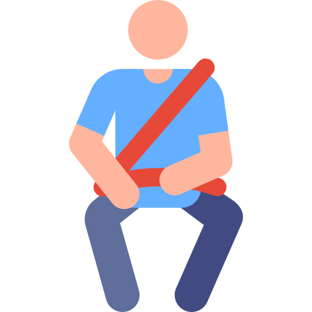
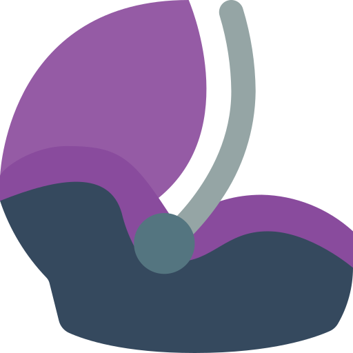

RECOMENDACIONES PARA LA CIRCULACIÓN CON VEHICULOS (de uso particular).
Es obligatorio por ley circular con luces bajas encendidas 24hs. en zona rural y rutas. En zona urbana es obligatoria en horarios o momentos de baja luz natural.

El uso del cinturón de seguridad es obligatorio por ley para todos los ocupantes del vehículo. Esto es extensivo aun se circule por su barrio o zonas de cercanía.

Los niños menores de 10 años, deben viajar en los asientos traseros utilizando el SRI (Sistemas de retención Infantil) correspondiente acorde a su peso y altura.
Asegúrese de circular con la documentación correspondiente. DNI, Licencia de conducir acorde al vehículo que conduce, Comprobante de seguro vigente, Cédula de identificación del vehículo, Comprobante de RTO y chapas patentes colocadas y comprobante de pago de pantentes.
Respete las normas. Estacionamiento, semáforos, velocidades máximas, sentidos de circulación y dando siempre prioridad en las esquinas a los peatones.
Revise los neumáticos. Que no presenten cortes y que su banda de rodamiento tenga surcos (profundidad no menor a 1,6 mm). La presión de aire debe ser la óptima acorde a la recomendación del fabricante.